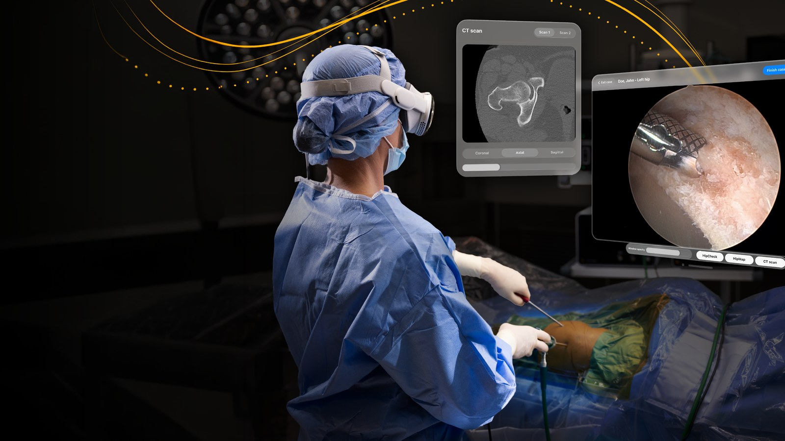

Good morning. The Apple Vision Pro has spent the past year being written off: reported “as good as discontinued” for consumers in April, price raised to $3,699 in June, more column inches about its failure than its features. Then, on September 1, an orthopedic surgeon at Duke Health put one on, guided a camera into a patient's hip joint, and finished the case with Stryker's surgical app floating around his field of view. It was the first surgery on Apple's headset with a live FDA authorization behind it. The version of this story that matters isn't about a gadget — it's about the first regulated job spatial computing has ever been given.
What: Stryker's SportSuite Vision — an app that brings arthroscopic video, HipCheck, HipMap and CT imaging into an Apple Vision Pro worn during surgery.
When: FDA De Novo authorization on July 17, 2026; first live case at Duke Health on September 1, 2026.
Why it matters: the first app the FDA has authorized for intraoperative use with the Vision Pro — a regulatory lane that didn't exist and is now open. And it caps a pattern: the headset consumers didn't want is being adopted by hospitals anyway.
What actually happened
On September 1, Stryker — the $100B+ medical-technology company best known for hips, knees and trauma — announced that a hip arthroscopy had been completed at Duke Health with surgeons using SportSuite Vision on an Apple Vision Pro. The procedure was performed by orthopedic surgeon Chad Mather III, M.D., M.B.A. SportSuite Vision had received FDA De Novo authorization on July 17 — the first application authorized by the FDA for intraoperative use with the Vision Pro.
Hip arthroscopy is already a screen-guided procedure. A tiny camera called an arthroscope goes into the joint, and the surgeon does much of the work watching its feed on a monitor somewhere else in the room. SportSuite Vision's trick: it puts that feed, plus the HipCheck/HipMap analysis and the CT scan, into a headset you look through — and lets the surgeon arrange those virtual windows wherever they want, hands-free, without losing sight of the patient. Multiple displays around the OR collapse into one ergonomic field of view.
What the FDA actually cleared (it's narrow)
The fine print is where most coverage gets loose, so let's tighten it. The De Novo authorization is not a green light for Apple Vision Pro in surgery generally. It is a focused clearance for SportSuite Vision software used to display arthroscopic video and medical imaging during femoroacetabular impingement and labral-repair hip arthroscopy — plus the information presented by HipCheck and HipMap FAI Analysis. A specific app, a specific joint, a specific class of procedure.
Two consequences follow. First, the FDA documents describe SportSuite Vision being used alongside traditional monitors — other staff still work on conventional screens, and the room keeps its redundancy. This is a hybrid OR, not a monitor-free one. Second, and more important: the De Novo pathway exists precisely for novel devices with no predicate — so this clearance creates the regulatory classification that future intraoperative spatial-computing apps can be compared against. The first company through the lane didn't just win a milestone; it wrote the lane.
“Using spatial computing enabled me to customize the placement of key clinical information to fit my workflow and access it within the sterile field. This helped create a more comfortable, streamlined OR setup while keeping the information I needed in view.”
— Chad Mather III, M.D., M.B.A., orthopedic surgeon at Duke HealthThe surgeon's eye view
The pitch is ergonomics as much as information. In a conventional endoscopic setup, the surgeon alternates between their hands and a distant monitor — a rotation that, over a career, accumulates into the neck-and-back strain that the surgical literature treats as an occupational hazard. A headset that keeps the relevant screen in a neutral posture addresses the person as much as the procedure.
Skeptics will (correctly) point out the trade-offs: weight on the face for a four-hour case, the fit alongside masks and loupes, cleaning protocols, and what happens when the battery dies or the app stalls mid-procedure. That's why the monitor stays on as a failover. The whole category is best understood as a more-comfortable placement of the same information you already use — not a robot, not an overlay telling the surgeon where to cut. It's a nicer desk view, right where surgery happens.
The evidence so far
This hasn't been a demo-first story. The peer-reviewed evidence arrived before the big marketing moment — the first controlled Vision Pro surgery trial landed in August, and its headline number is real: 19% faster, identical outcomes, across 32 cases at a single institution. On every measured variable, the headset side either won or tied: shorter operating time, same safety profile, lower surgeon-reported workload, lower reported equipment cost.
32 cases · single institution · peer-reviewed (published Aug 7, 2026). Small sample, and the authors call it preliminary — but the direction of every measured variable favored the headset, which is unusual even for a small study. It exists to justify the bigger trial that follows.
The long history behind this: a New York ophthalmologist has performed hundreds of cataract procedures wearing a Vision Pro since October 2025 (SightMD); UCSD surgeons have worn the device in minimally invasive cases since 2024; a 2026 spine study ran 40 biportal endoscopic lumbar cases with the headset and reported feasibility; another 2026 study covered endoscopic dacryocystorhinostomy (tear-duct surgery).
And the important negative result: a comparative study of mixed-reality-guided needle insertion concluded the Vision Pro was unsuitable for that workflow — because accurate guidance needs tight tracking stability, registration accuracy and latency control, not just a nice big floating screen. Floating a video window is easy; overlaying a virtual guide on human tissue is a much harder validation. The lesson: spatial computing will win where it's a display, and lose where it needs to be a navigator — at least for now.
Before the knife: planning, training, and Pfizer's night shift
Live surgery is the loudest use case, but the quieter medical wins are arriving first and spreading faster:
- Preoperative planning. Stryker's myMako lets surgeons review patient-specific plans for its robotic platform; Siemens Healthineers' Cinematic Reality renders anatomy from scans; researchers built nextViewer for neurosurgical planning with eye-and-hand controls. A frozen planning app is an annoyance; a frozen navigation overlay is a patient-safety event — so planning is the adoption path with fewer risks.
- Training and education. Spatial anatomy models let residents repeat a simulated approach without competing for a view inside a real OR.
- Pfizer (Sep 3). Two days after the Stryker case, Pfizer launched an immersive Vision Pro experience — built with Groove Jones — that walks patients and families through its oncology and antibody-drug-conjugate research, part of an “outdo cancer” campaign. It's marketing, not medicine, but it tells you which side of healthcare budgets is paying attention: the same week surgery got its first FDA green light, a pharma company used the headset to explain what it sells.
The consumer footnote
None of this makes sense without the consumer story. The Vision Pro launched at $3,499, got an M5 upgrade in October 2025, then — as Apple repositioned it toward enterprise — the price rose to $3,699 in June 2026. Through the spring, reporting described a consumer roadmap in retreat and called the product essentially discontinued for its original audience. The disruptor Apple built to replace the iPhone is, at home, a footnote.
But hospitals buy on different economics. Operating-room time is among the most expensive single minutes a hospital manages; removing ~eight minutes per case from a 43-minute arthroscopy is capacity, not convenience. Buyers who calculate ROI per case, over years and hundreds of procedures, are exactly the audience a $3,699 device needs. The market that keeps generating evidence for the Vision Pro is the one in scrubs.
What to watch next
- Does the waitlist widen? SportSuite Vision is deployed via a controlled waitlist, not public download. Watch adoption pace across Stryker's sports-medicine sites — that's the real rollout speedometer.
- The measurements that matter. Setup time, image latency, interruption and freeze rates, head-and-neck posture over full cases, and the honest stat: how often surgeons reach for the conventional monitor. Those numbers will decide adoption more than any spec sheet.
- Does the De Novo lane fill? The first intraoperative clearance sets a precedent. Expect rival medtech and new surgical-display apps to reference it within quarters.
- Multi-center trials. The 19% result is single-institution. A powered multi-center study — different surgeons, different hospitals, complications counted — is the gate before hospital procurement committees commit.
- Apple's pivot. If the consumer Vision Pro keeps fading, medical-enterprise adoption is what will keep visionOS alive. The operating room isn't a niche for this product anymore — it's looking like the moat.
The TIMPS verdict
Spatial computing finally got a job. Every earlier Vision Pro story was a demo or a pivot whiteboard. An FDA De Novo clearance plus a real hip arthroscopy is a regulated, billable, repeatable workflow. That's the difference between a gadget and a tool.
The narrowness is the strength. This is one app, one joint, one kind of procedure, used beside conventional monitors. Read that as discipline, not disappointment — the needle-insertion study is a reminder that swallowing the whole OR at once would've failed.
Caveat the numbers. 19% faster is one small study. The peer-review for the Stryker rollout is a forward purchase order, not yet scientific — outcomes data at scale is the honest scoreboard.
The whole story in one line: the $3,699 headset everyone wrote off found the only market that could love it, and the first real approval for a piece of the future arrived in a hip joint in North Carolina.
Facts in this piece were compiled from Stryker's official SportSuite Vision announcement and press materials, the FDA De Novo submission reporting (DEN250040), PR Newswire, 9to5Mac, STAT News, VR.org's review of the peer-reviewed trial, AppleMagazine, Mas Device, Asymco, The Mac Observer, AppleInsider and TIME coverage contemporaneous with the September 1–5, 2026 release window. Clinical outcomes are as reported by the cited sources and studies; this is news analysis by an independent publication — not medical advice, not investment advice, and not AI advice.
Sources
- Stryker — First FDA-authorized surgical application for Apple Vision Pro (Sep 1, 2026)
- PR Newswire — Stryker release (Sep 1, 2026)
- VR.org — First peer-reviewed Vision Pro surgery trial: 19% faster, identical outcomes (Aug 7, 2026)
- 9to5Mac — Vision Pro used in first-of-its-kind surgery (Sep 3, 2026)
- Phandroid — Vision Pro gets a second life in the operating room (Sep 4, 2026)
- AppleMagazine — Vision Pro surgery reaches an FDA-authorized milestone (Sep 2, 2026)
- AppleMagazine — Vision Pro surgery is beginning to transform operating rooms (Aug 12, 2026)
- UnderCodenews — FDA De Novo details: DEN250040, Class II, scope ("the first application is narrow—and that is a good thing")
- STAT — FDA clears Stryker 'surgical cockpit' using Apple Vision Pro (Sep 1, 2026)
- Asymco — The first surgical Apple Vision Pro application approved by the FDA (Sep 3, 2026)
- AppleInsider — Pfizer launches immersive Vision Pro experience (Sep 3, 2026)
- TIME — Why surgeons are wearing the Apple Vision Pro (May 11, 2026)
One story a day,
explained properly.
New TIMPS deep dives land regularly — paired with the five-signal PostCard every morning. Free forever.